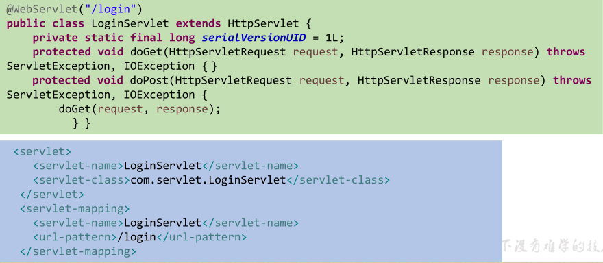
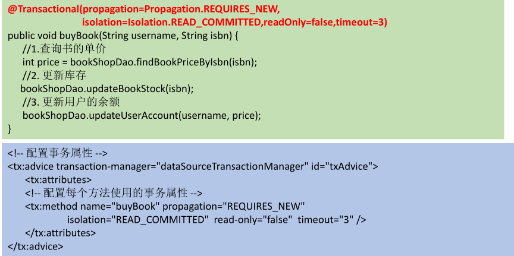
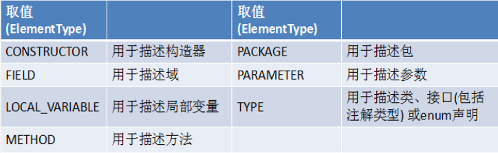
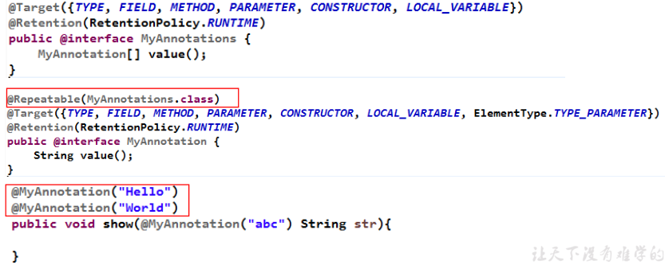

自定义枚举类的三个原则：
自定义枚举类举例：SeasonTest类
package com.atguigi.java;
public class SeasonTest {
public static void main(String[] args) {
Season spring = Season.SPRING;
System.out.println(spring); // Season{seasonName='春天', seasonDesc='春暖花开'}
}
}
// 自定义枚举类
class Season{
// 1. 声明Season对象的属性：private final修饰
private final String seasonName;
private final String seasonDesc;
// 2. 私有化类的构造器，并给对象属性赋值
private Season(String seasonName, String seasonDesc){
this.seasonName = seasonName;
this.seasonDesc = seasonDesc;
}
// 3. 提供当前枚举类的多个对象：public static final修饰的
public static final Season SPRING = new Season("春天", "春暖花开");
public static final Season SUMMER = new Season("夏天", "夏日炎炎");
public static final Season AUTUMN = new Season("秋天", "秋高气爽");
public static final Season WINTER = new Season("冬天", "冰天雪地");
// 4. 其他诉求：获取枚举类对象的属性
public String getSeasonName() {
return seasonName;
}
public String getSeasonDesc() {
return seasonDesc;
}
// 5. 其他诉求：提供toString
@Override
public String toString() {
return "Season{" +
"seasonName='" + seasonName + '\'' +
", seasonDesc='" + seasonDesc + '\'' +
'}';
}
}package com.atguigi.java;
/**
* 使用enum关键字定义枚举类
* 说明：定义的枚举类默认继承于java.lang.Enum类
*/
public class SeasonTest1 {
public static void main(String[] args) {
Season1 summer = Season1.SUMMER;
System.out.println(summer); // Season1{seasonName='夏天', seasonDesc='夏日炎炎'}
System.out.println(Season1.class.getSuperclass()); // class java.lang.Enum
}
}
//使用enum关键字枚举类
enum Season1{
// 1.提供当前枚举类的对象，多个对象之间用","隔开，末尾对象";"结束
SPRING ("春天", "春暖花开"),
SUMMER("夏天", "夏日炎炎"),
AUTUMN("秋天", "秋高气爽"),
WINTER("冬天", "冰天雪地");
// 2. 声明Season对象的属性：private final修饰
private final String seasonName;
private final String seasonDesc;
// 3. 私有化类的构造器，并给对象属性赋值
private Season1(String seasonName, String seasonDesc){
this.seasonName = seasonName;
this.seasonDesc = seasonDesc;
}
// 4. 其他诉求：获取枚举类对象的属性
public String getSeasonName() {
return seasonName;
}
public String getSeasonDesc() {
return seasonDesc;
}
// 5. 其他诉求：提供toString
@Override
public String toString() {
return "Season1{" +
"seasonName='" + seasonName + '\'' +
", seasonDesc='" + seasonDesc + '\'' +
'}';
}
}使用enum关键字定义枚举类时，如果没有重写toString()，那么下面的代码执行的是结果是SUMMER。
Season1 summer = Season1.SUMMER;
System.out.println(summer); Season1 summer = Season1.SUMMER;
//toString():返回枚举类对象的名称
System.out.println(summer.toString());
System.out.println("****************");
//values():返回所有的枚举类对象构成的数组
Season1[] values = Season1.values();
for(int i = 0;i < values.length;i++){
System.out.println(values[i]);
//values[i].show();
}
System.out.println("****************");
//valueOf(String objName):返回枚举类中对象名是objName的对象。
Season1 winter = Season1.valueOf("WINTER"); // Season1{seasonName='冬天', seasonDesc='冰天雪地'}
//如果没有objName的枚举类对象，则抛异常：IllegalArgumentException
// Season1 winter = Season1.valueOf("WINTER1");
System.out.println(winter);定义接口Info，接口中定义方法show()。枚举类中的每个对象实现重写show()方法。实现的结果是不同的枚举类对象电泳同一个方法得到不同结果。
package com.atguigi.java;
/**
* 使用enum关键字定义枚举类
* 说明：定义的枚举类默认继承于java.lang.Enum类
*/
public class SeasonTest1 {
public static void main(String[] args) {
Season1 summer = Season1.SUMMER;
summer.show(); // 宁夏
Season1 winter = Season1.valueOf("WINTER");
winter.show(); // 大约在冬季
}
}
interface Info{
void show();
}
//使用enum关键字枚举类
enum Season1 implements Info{
// 1.提供当前枚举类的对象，多个对象之间用","隔开，末尾对象";"结束
SPRING ("春天", "春暖花开"){
@Override
public void show() {
System.out.println("春天在哪里？");
}
},
SUMMER("夏天", "夏日炎炎"){
@Override
public void show() {
System.out.println("宁夏");
}
},
AUTUMN("秋天", "秋高气爽"){
@Override
public void show() {
System.out.println("秋天不回来");
}
},
WINTER("冬天", "冰天雪地"){
@Override
public void show() {
System.out.println("大约在冬季");
}
};
// 2. 声明Season对象的属性：private final修饰
private final String seasonName;
private final String seasonDesc;
// 3. 私有化类的构造器，并给对象属性赋值
private Season1(String seasonName, String seasonDesc){
this.seasonName = seasonName;
this.seasonDesc = seasonDesc;
}
// 4. 其他诉求：获取枚举类对象的属性
public String getSeasonName() {
return seasonName;
}
public String getSeasonDesc() {
return seasonDesc;
}
// 5. 其他诉求：提供toString
@Override
public String toString() {
return "Season1{" +
"seasonName='" + seasonName + '\'' +
", seasonDesc='" + seasonDesc + '\'' +
'}';
}
}从JDK5.0开始，Java增加了对元数据（MetaData）的支持，也就是Annotation（注解）。
Annotation其实就是代码里的特殊标记，这些标记可以在编译，类加载，运行时被读取，并执行相应的处理。通过使用Annotation，程序员可以在不改变原有逻辑的情况下，，在源文件中嵌入一些补充信息。代码分析工具、开发工具和部署工具可以通过这些补充信息进行验证或者进行部署。
name = value对中。框架 = 注解 + 反射 + 设计模式
@Overrive：限定重写父类的方法，该注解只能用于方法；@Deprecated：用于表示所修饰的元素（类、方法）已过时，通常是因为所修饰的结构危险或存在更好的选择；@SuppressWarning：抑制编译器警告。

@interface关键字java.lang.annotation.Annotation接口；package java.atguigu.java1;
public @interface MyAnnotation {
String value() default "hello";
}JDK中的元Annotation用于修饰其他Annotation定义，JDK5.0中提供了4个标准的meta-annotation类型，分别是：
Retention、Target、Documented、Inherited。
@Retention：只能用于修饰一个Annotation定义，用于指定该Annotation的生命周期，@Retention包含一个RetentionPolicy类型的成员变量，使用这个注解时必须为该value成员变量指定值：
RetentionPolicy.SOURCE：在源文件中有效（即源文件保留），编译器直接丢弃这种策略的注解；RetentionPolicy.CLASS：在class文件中有效（即class保留），当运行程序时，JVM不会保留注解。这是默认值RetentionPolicy.RUNTIME：在运行时有效（即运行时保留），当运行 Java程序时，JVM会保留注解。程序通过反射获取该注解。public enum RetentionPolicy{
SOURCE,
CLASS,
RUNTIME
}@Target：用于修饰Annotation定义，用于指定被修饰的Annotation能用于修饰哪些程序元素。@Target也包含一个名为value的成员变量。

Java8对注解处理提供了两点改进：可重复的注解和可用于类型的注解。此外，反射也得到了加强，在Java8中能够得到方法参数的名称。这会简化标注在方法参数上的注解。

public class TestTypeDefine<@TypeDefine() U> {
private U u;
public <@TypeDefine() T> void test(T t){
}
}
@Target({ElementType.TYPE_PARAMETER})
@interface TypeDefine{
}@MyAnnotation
public class AnnotationTest<U> {
@MyAnnotation
private String name;
public static void main(String[] args) {
AnnotationTest<@MyAnnotation String> t = null;
int a = (@MyAnnotation int) 2L;
@MyAnnotation
int b = 10;
}
public static <@MyAnnotation T> void method(T t) {
}
public static void test(@MyAnnotation String arg) throws @MyAnnotation Exception {
}
}
@Target(ElementType.TYPE_USE)
@interface MyAnnotation {
}